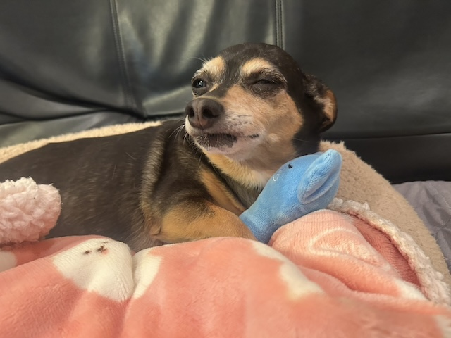

Coco's Story
ココは子犬の頃に家族の一員になりました。 最初は少し緊張していましたが、すぐに家にも慣れて毎日元気いっぱい遊ぶようになりました。
寝ることとおやつの時間が大好きで、 家族と一緒に過ごす時間をいつも楽しんでいます。
| 家族になった日 | 小さい時 |
|---|---|
| 好きなこと | お昼寝 |
| 好きなおやつ | 芋 |
| 特技 | 寝ること |

Memory
小さい頃から元気いっぱいで、毎日家族を笑顔にしてくれる大切な存在です。 これからもたくさんの思い出を作っていきたいと思っています。
Favorite
- 散歩
- おやつ
- お昼寝
- ぬいぐるみ